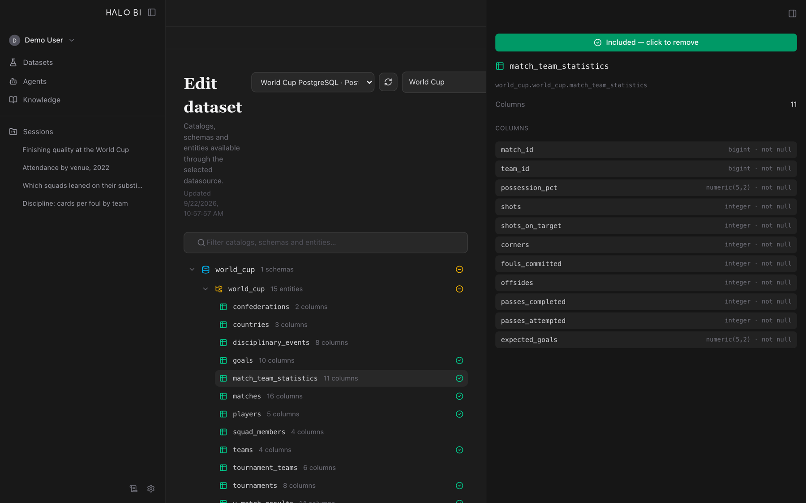

Step 01
Point it at your data — and only the part that matters.
Connect a Databricks SQL warehouse or a PostgreSQL database and browse the catalog as it really is: schemas, tables, column types, sample values. Tick the entities that belong in a dataset, and a session works over those — nothing wider.
You can define a metric here too. Write finishing quality once as a SQL expression and every answer that needs it reuses that expression instead of re-deriving the number and drifting.
